Instalaciones
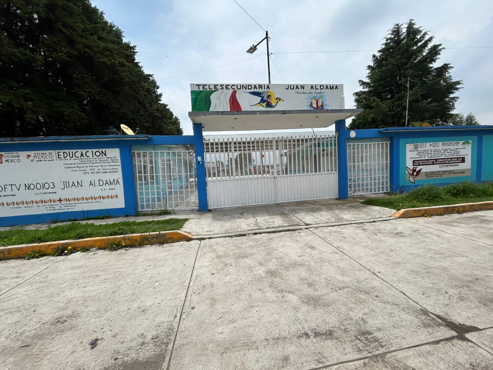
Fachada principal de la Telesecundaria OFTV No. 0103 "Juan Aldama".
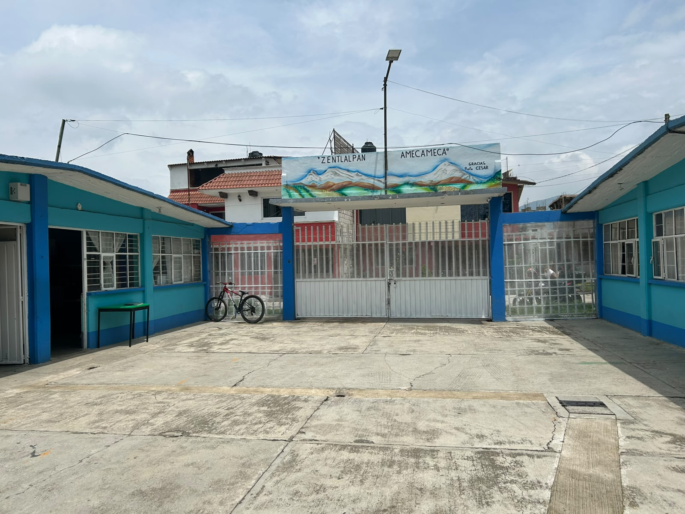
Vista interior del acceso principal de la Telesecundaria OFTV No. 0103 "Juan Aldama"

Vista general de las aulas de la institución, espacios destinados al desarrollo de las actividades académicas de los estudiantes.
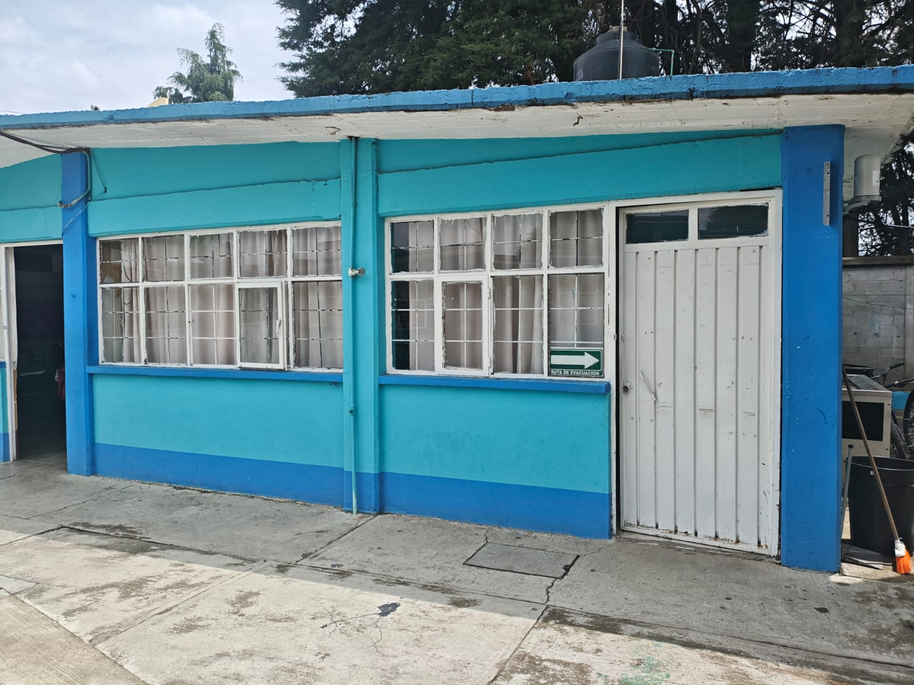
Detalle exterior de los salones de clase que conforman la infraestructura educativa de la institución.
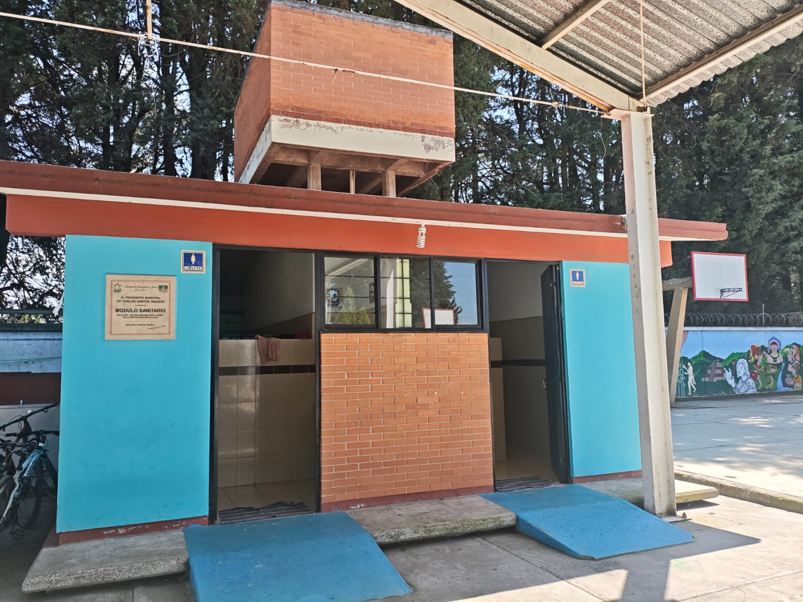
Módulo de sanitarios escolares, acondicionado para brindar un servicio higiénico y seguro a la comunidad educativa.
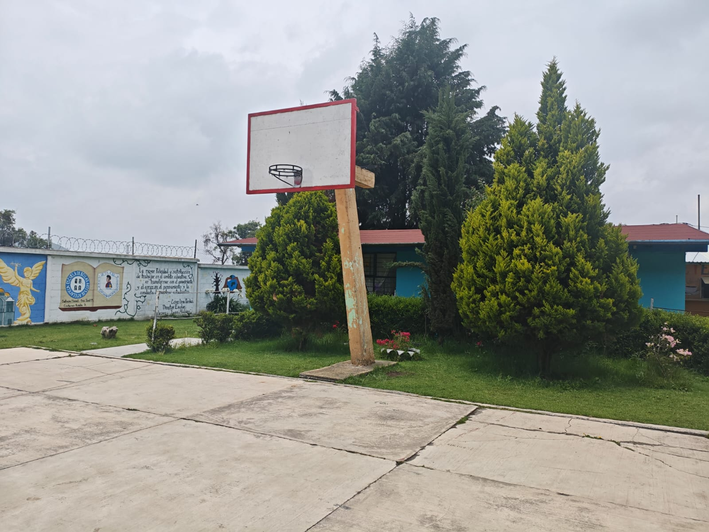
Cancha de basquetbol integrada con áreas verdes que ofrecen un entorno agradable para el desarrollo de actividades deportivas y de recreación.

Cancha de basquetbol utilizada para actividades deportivas, recreativas y eventos de convivencia escolar.
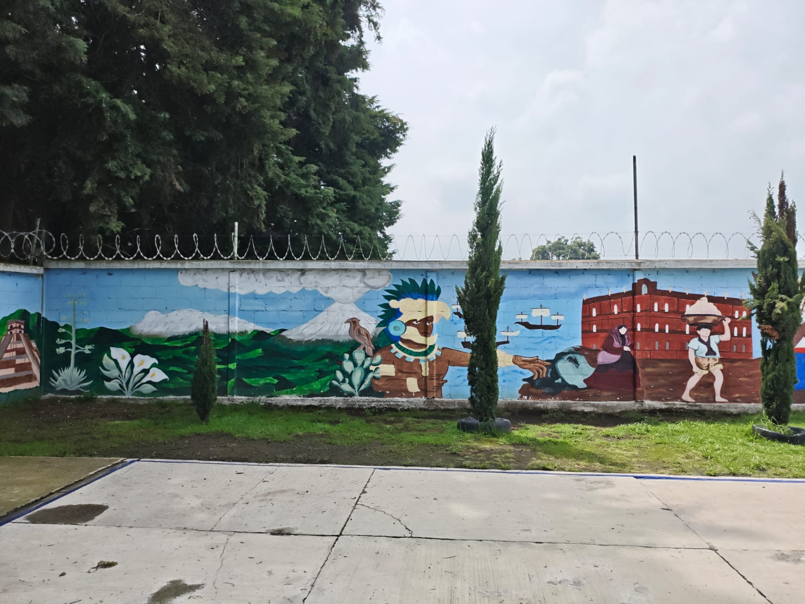
Mural artístico que fortalece la identidad escolar mediante representaciones culturales, históricas y valores de la comunidad educativa.
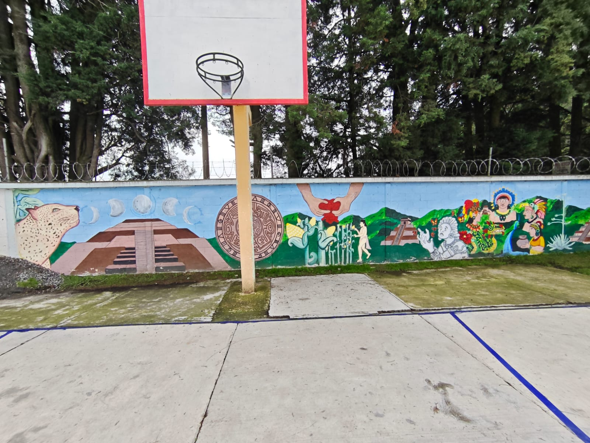
Espacio deportivo acompañado de un mural institucional que promueve la identidad, la cultura y el sentido de pertenencia.
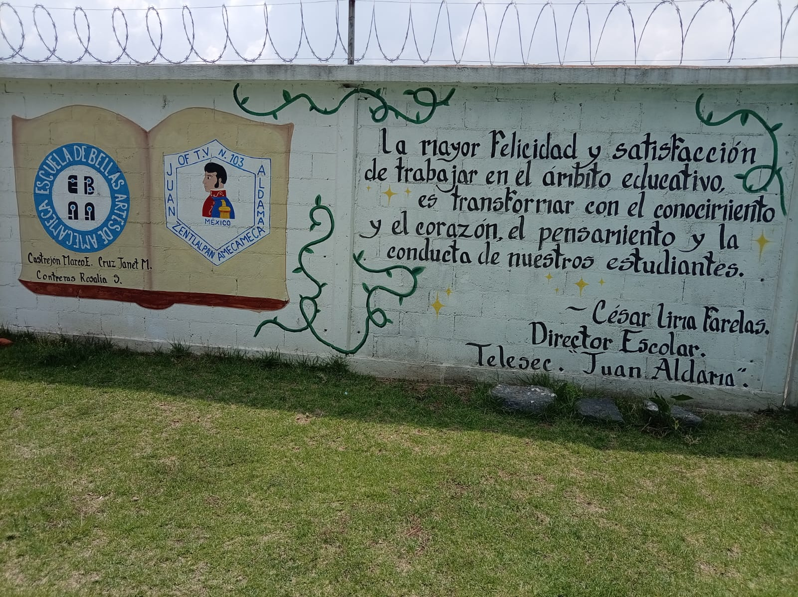
Mural institucional con el lema de la escuela y los emblemas que representan la identidad de la Telesecundaria "Juan Aldama".
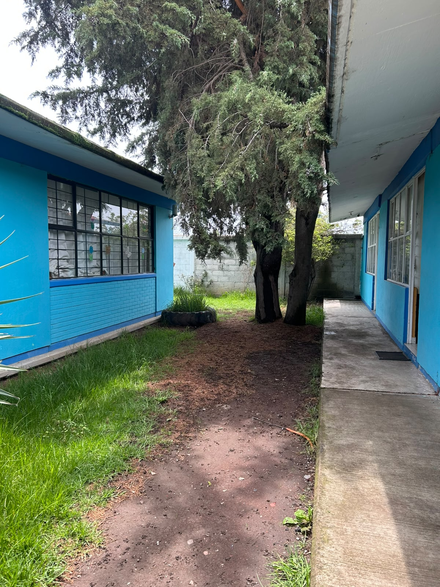
Pasillos laterales y áreas verdes entre los edificios de la institución
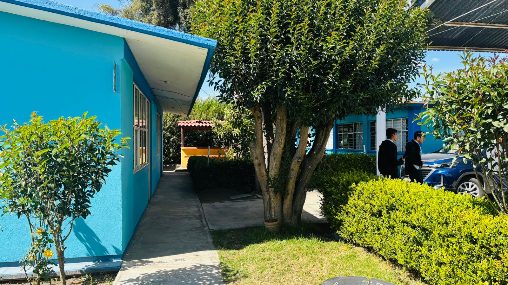
Pasillo que comunica las diferentes aulas y áreas académicas de la institución, rodeado de áreas verdes.

Área de mesas al aire libre destinada al descanso, la convivencia y el consumo de alimentos durante los periodos de receso.
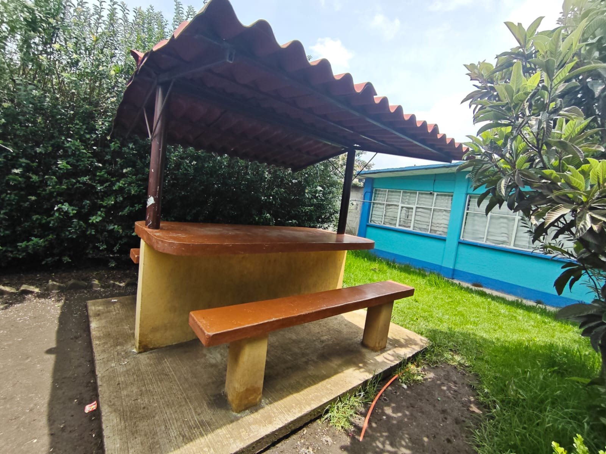
Espacio techado que brinda a los estudiantes un lugar cómodo para la convivencia y descanso.

Cooperativa escolar, espacio destinado para brindar servicio a la comunidad estudiantil durante la jornada escolar.
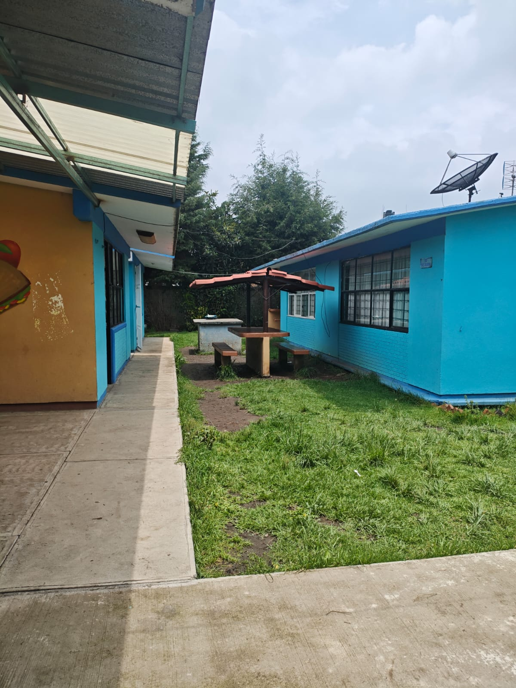
Vista exterior de la cooperativa escolar y del área de convivencia utilizada por los alumnos durante los horarios de descanso.
.jpeg)
Aula de cómputo equipada con equipos de cómputo que fortalecen el aprendizaje y el desarrollo de competencias digitales de los estudiantes.